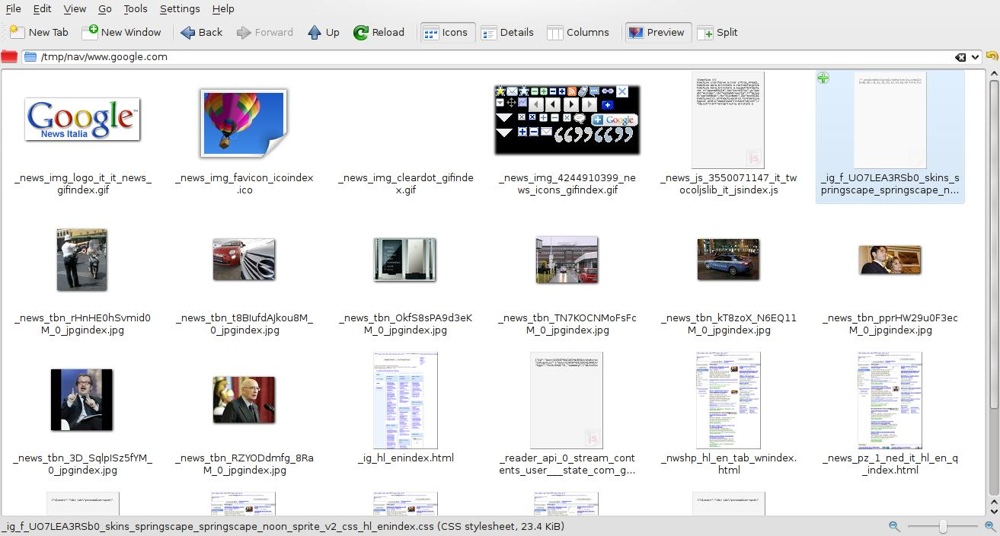

justniffer-grab-http-traffic
It's a python script that wraps justnifferIt simplifies the call to justniffer, setting appropriate options to capture network traffic.It identifies http contents (images, text, html pages, javascript, flash, video, etc) and saves them into files
Examples
To save all http contents into /tmp/nav directory:
sudo ./justniffer-grab-http-traffic -d /tmp/nav -U nobody -i eth0
Note that you MUST specify a user without root privileges, that will be user when saving files, in order to avoid to save files with root privileges that could be very dangerous.Synopsis
Usage: justniffer-grab-http-traffic [options]
Options:
--version show program's version number and exit
-h, --help show this help message and exit
-d DIRECTORY, --directory=DIRECTORY MANDATORY: directory where to save files
-p PACKET_FILTER, --packet-filter=PACKET_FILTER packet filter (tcpdump filter syntax), default ='port 80'
-U USER, --user=USER user to impersonate when saving files, cannot be the root user
-i INTERFACE, --interface=INTERFACE network interface to listen on (e.g. eth0, en1, etc.)
-f FILECAP, --filecap=FILECAP input file in 'tcpdump capture file format'
-P PARSER_SCRIPT, --parser_script=PARSER_SCRIPT parser script to execute, default is /usr/share/justniffer/scripts/http_parser.py
Example of some files captured from http traffic
